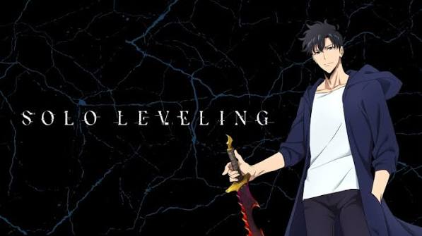

Sung Jinwoo continúa conquistando a los fans del anime de acción.
Solo Leveling muestra nuevas imágenes del ejército de Sung Jinwoo y prepara su nuevo arco para cines

Desde la cuenta oficial de Solo Leveling comparten nuevos carteles de las sombras de Sung Jinwoo: la primera película de la serie está en camino.Solo Leveling calienta motores para 'Beyond the System', su primera película en cines, y comparte nuevas imágenes de las sombras de Sung Jinwoo. Mientras la secuela de Dauel, en el terreno del manhwa, reanuda su publicación con la temporada 3, el anime de Aniplex y A-1 Pictures se prepara para conquistar las salas de cine tras haber convertido la historia de Chugong en un fenómeno mundial sin precedentes, siendo el anime más valorado y seguido de Crunchyroll.
Solo Leveling: Beyond the System tiene confirmado su estreno en la gran pantalla para 2027 y, por ahora, únicamente hemos podido ver un breve tráiler mostrando a Sung Jinwoo junto a su ejército. Ahora, desde la cuenta oficial de la serie llegan unos carteles dedicados a Iron, Beru, Igrit, Tank, Kaisel y Kiba, las sombras más poderosas del protagonista.